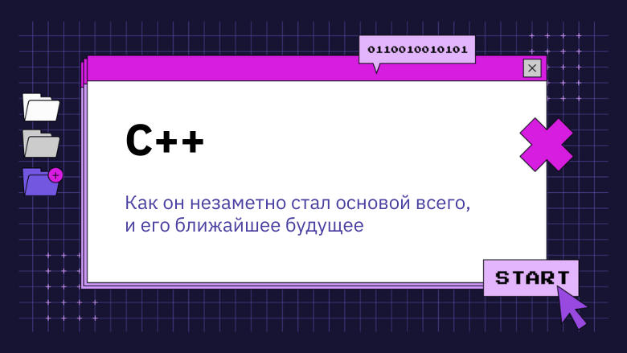

Язык программирования C++: Как он незаметно стал основой всего, и его ближайшее будущее
Мощный, гибкий, сложный: история C++ началась еще 40 лет назад, и по сей день он остается одним из наиболее широко используемых языков программирования. TechRepublic в беседе с создателем C++ Бьерном Страуструпом попытался выяснить, в чем его особенность.
Бьерн Страуструп: «Эволюция необходима для того, чтобы справляться с вызовами меняющегося мира и реализовывать новые идеи». ("Evolution is necessary to meet the challenges of a changing world and to incorporate new ideas.")
История C++ начинается в 1979 году, когда Бьерн Страуструп, создатель этого языка программирования, впервые начал работу над языком, который тогда был известен как «С c классами» (C with Classes). Изначально язык разрабатывался, как новая улучшенная версия языка программирования C с добавлением дополнительных фич, которые сделали его объектно-ориентированным.